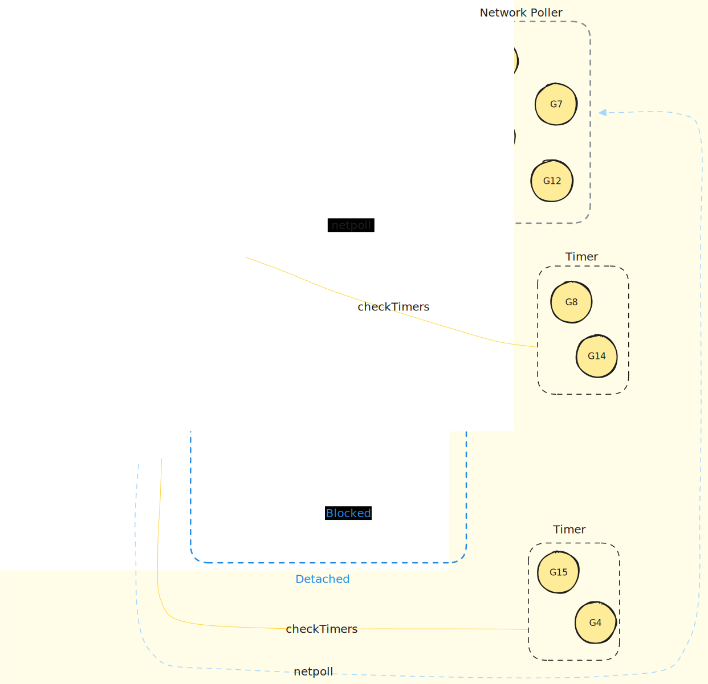
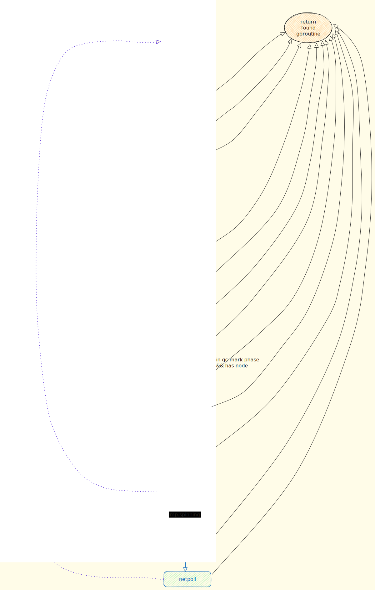

我翻译了Goroutine Scheduler Revealed: Never See Goroutines the Same Way Again, 这篇文章发表于1月2号，作者在文章最后说：
在接下来的部分,我们将更深入地探讨抢占式调度,并分析调度程序在运行期间所采取的每一步骤。
接下来快三个月了，也没有下文了，貌似鸽了。
为了不让读者等待，我接下来把相关的内容补上。
当然，Go的调度器也在演化之中，你看几年前的代码，或者几年后的代码，可能就没有办法一一对应了，我们以1.21.1版本讲解。
schedule 函数
函数schedule执行一次调度器循环，找到一个可运行的goroutine并执行它。这个函数永不返回。当一个 goroutine 执行完毕，它会再次调用 schedule 函数来选择下一个要执行的 goroutine。这就是为什么 schedule 函数看起来像是永不返回：它总是在选择和执行 goroutine，除非没有更多的 goroutine 可以执行。
schedule 函数并不是通过常规的函数调用栈来调度 goroutine 的。当一个 goroutine 结束执行，它并不是通过返回到 schedule 函数来调度下一个 goroutine，而是通过一种称为 "栈切换" 的技术。
在具体实现上，每个 goroutine 都有自己的栈，当它开始执行时，运行时系统会将当前的栈指针切换到这个 goroutine 的栈，当它结束执行时，运行时系统会将栈指针切换回原来的栈（通常是所谓的 "系统栈" 或 "调度器栈"）。这样，每个 goroutine 的函数调用栈都是独立的，它们不会互相影响，也不会导致栈溢出。
因此，尽管从代码上看 schedule 函数像是在递归调用，但实际上它并不会导致栈溢出，因为每次调用 schedule 都是在一个新的 goroutine 的栈上，而不是在同一个函数调用栈上。
以下是一些可能会调用 schedule 函数的函数和它们的使用场景：
goexit(goexit1->goexit0)：当一个goroutine结束执行时，它会调用goexit函数来清理资源并退出。在goexit函数中，会调用schedule函数来选择下一个要执行的goroutine。preemptPark：preemptPark函数被用于实现抢占式调度。当运行时系统决定当前正在执行的goroutine需要被抢占时，它会设置 goroutine 的状态为_Gpreempted，并调用preemptPark函数将goroutine挂起。park_m:park_m函数被用于将当前的操作系统线程（M）挂起，直到有新的goroutine可以运行。比如没有goroutine可运行时，或者因为每个条件阻塞时。goschedImpl：调用runtime.Gosched函数时，它被用于让当前的goroutine主动让出 CPU，让其他goroutine有机会执行。goyield_m: 类似runtime.Gosched函数,goyield_m函数也被用于让当前的goroutine主动让出 CPU，让其他goroutine有机会执行。但是它会把当前的goroutine放到local run queue,而不像Gosched放到global run queue。mstart1：创建的操作系统线程（M）开始执行时被调用的。b比如新创建M时，或者M不够用的时候。它的主要任务是初始化线程的环境，并开始执行调度循环。exitsyscall0:exitsyscall0函数在一个goroutine完成系统调用并准备返回到 Go 空间时被调用。系统调用的goroutine返回后，会尝试找一个空闲的P去执行当前的G(和M), 否则会把当前的G放到global run queue中。
这些函数都是 Go 语言运行时系统中的内部函数，它们的具体实现可能会因 Go 语言的版本和运行时系统的配置而不同。
在schedule函数中，重要的是调用了findRunnable, 找到一个可以执行的goroutine。必须要找到一个，否则会阻塞直到找到一个goroutine:
|
|
那么，接下来我们跟踪findRunnable函数,了解它的每一个步骤，这是调度器工作的重点。
findRunnable 函数

findRunnable 函数是调度器的核心函数之一，它的主要任务是找到一个可以执行的 goroutine。
findRunnable 函数的实现非常复杂，因为它需要考虑很多因素，比如当前的 goroutine 是否需要被抢占，当前的 goroutine 是否需要让出 CPU，当前的 goroutine 是否需要被挂起，当前的 goroutine 是否需要被唤醒，当前的 goroutine 是否需要被移动到其他的 P，等等。我们暂时不考虑这些复杂的情况，只关注最简单的情况：怎么找到一个可以执行的 goroutine。
可以寻找的goroutine
重点它寻找一个可以执行的goroutine，这些goroutine都是存在什么地方内？
local run queue: 每个P都有一个local run queue，用于存放当前P上的goroutine。global run queue: 所有的P共享一个global run queue，用于存放所有的goroutine。netpoll: 用于处理网络事件的goroutine。timer: 用于处理定时器事件的goroutine。syscall: 用于处理系统调用的goroutine。
处于性能优化的目的，每个处理器（P）确实包含一个四叉堆（heap），用于保存定时器（timer）。。
每个定时器都有一个到期时间，当到达这个时间时，定时器关联的函数就会被调用。四叉堆的结构使得运行时系统可以快速地找到最早到期的定时器，这对于定时器的处理非常重要。
当你在 Go 代码中使用 time.After，time.Sleep 或 time.AfterFunc 等函数时，就会创建一个定时器，并将其添加到当前 P 的 timers 四叉堆中。
全局还有一个网络轮询器（netpoller），它用于处理网络事件。每个findRunnable调用的时候也可能去访问它。
findRunnable 寻找goroutine的步骤

findRunnable函数寻找goroutine过程既复杂又简单。
说它复杂，是因为它需要考虑很多因素，做各种检查，执行不同的策略去寻找goroutine。
说它简单，是因为它的逻辑很清晰，只是一步一步地检查，直到找到一个可以执行的goroutine。一旦找到goroutine，就直接返回。
根据这个函数的实现，我把大致的逻辑画了一个流程图，如上图所示，下面我们一步一步地解释这个流程图，忽略其中的一些条件检查，我们主要关注它的大的逻辑。
- 首先定义了一个
top标签，因为在后面的代码中，需要从头开始重新检查，类似一个for循环，但是这里使用goto语句更清晰。 - 检查Timer,如果有到期的timer,则执行timer相关的goroutine。如果程序中有大量的Timer也不太好，如果Timer大量的增删或者日期变化，会导致性能问题。
- 检查tracer, 跟踪调用的goroutine，如果符合条件，执行。
- 检查是否有gc worker要执行，如果有，执行。
- 如果tick(嘀嗒)计数器到了61次，并且global run queue中有goroutine，那么执行global run queue中的goroutine。
- 如有必要，唤醒finalizer
- 如有必要，执行cgo_yield，让执行cgo系统调用的goroutine让出CPU。
- 检查local run queue, 如果有goroutine，执行。
- 再次检查global run queue, 如果有goroutine，执行。
- 检查netpoll, 如果网络事件需要处理，唤醒相关的goroutine。
- 从其他P的local run queue中偷取goroutine，如果有goroutine，执行。
- 如有必要，执行idle-time marking, 执行GC的标记阶段。
- wasm相关的逻辑处理
- 再次检查global run queue, 如果有goroutine，执行。
- 如有需要，再次从头检查
- 再次检查netpoll
- 如果没有找到可以执行的goroutine，阻塞等待
总体上看， findRunnable 函数实现了一个通用的goroutine调度逻辑。
也许，针对不同的场景，你可以在这个调度器上微调，尝试获取更高性能调度：
- 调整寻找goroutine的顺序、频次等
- 进行goroutine的优先级调度、进行NUMA等CPU架构的优化
这样，我们把原作者的许诺的分享中的调度步骤的内容补上了，接下来补上最后一部分的内容：抢占式调度。请关注公众号 “鸟窝聊技术” 获取最新文章。